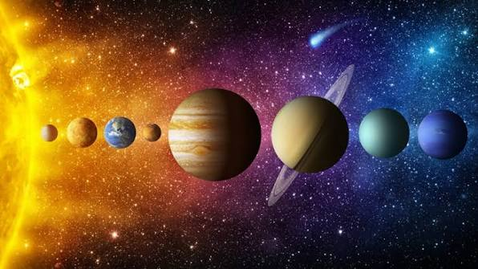

ระบบสุริยะ
"ระบบสุริยะเป็นระบบที่มี ดวงอาทิตย์เป็นศูนย์กลาง และมีวัตถุท้องฟ้าต่าง ๆ โคจรรอบดวงอาทิตย์ ได้แก่ ดาวเคราะห์ 8 ดวง คือ ดาวพุธ ดาวศุกร์ โลก ดาวอังคาร ดาวพฤหัสบดี ดาวเสาร์ ดาวยูเรนัส และดาวเนปจูน นอกจากนี้ยังมีดวงจันทร์ ดาวเคราะห์แคระ ดาวเคราะห์น้อย และดาวหาง ระบบสุริยะอยู่ในกาแล็กซีทางช้างเผือก และดวงอาทิตย์เป็นแหล่งพลังงานสำคัญที่ช่วยให้สิ่งมีชีวิตบนโลกสามารถดำรงชีวิตได้"
